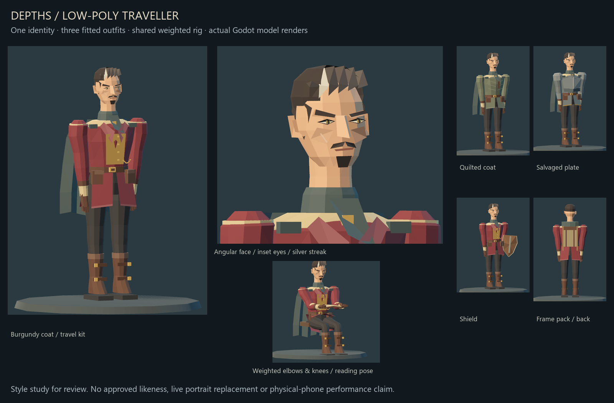
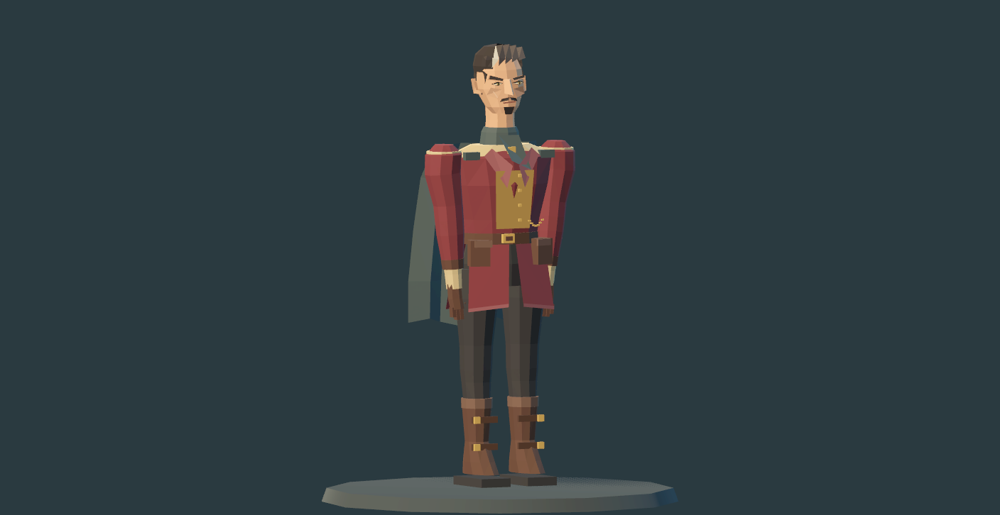
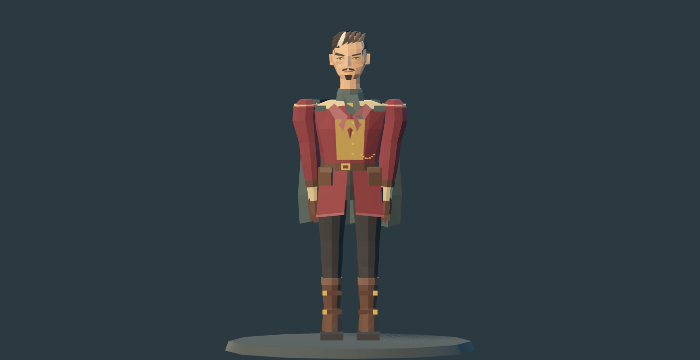
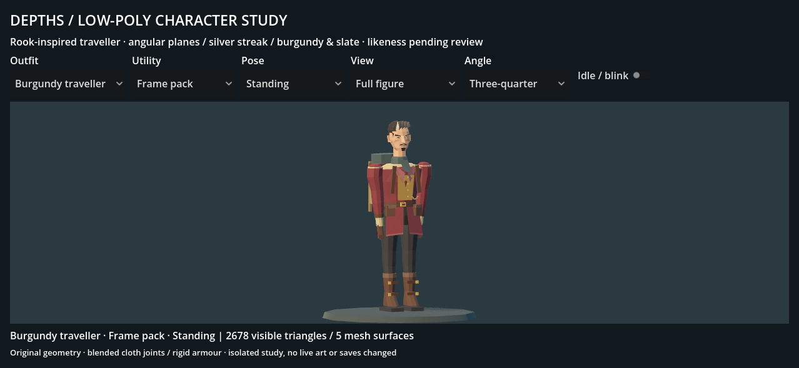

Low-poly traveller
A deliberate style pass on the male study: angular face, swept silver streak, restrained burgundy and slate, useful clothing details. Rook-inspired; character likeness and style are awaiting your review.

Inspect the actual model
Each image below is captured directly from Godot. Open the separate project to combine all three outfits, three utility items and three poses.

Native 96px portraits
The same face remains visible through outfit changes. These are native-size renderer outputs, with no painted facial details.

Traveller

Plate
Silhouette, utility and portability

Phone-shaped review

What this establishes
One shaped low-poly identity, three fitted outfits, a compatible 16-bone rig and genuinely blended cloth joints. Around 2.6k visible triangles in the default setup, across five single-surface meshes. Counts describe geometry, not measured phone performance.
Still limited to one body shape. Armour and fingers are rigid; the cape has no collision simulation. Exported clips are poses, not a walk cycle or full facial animation system. Named likeness, final style, live equipment binding and physical iPhone review remain separate.
Files
Original geometry and palette; no external model or source reference image used. Existing portraits, live camp and saves are unchanged.